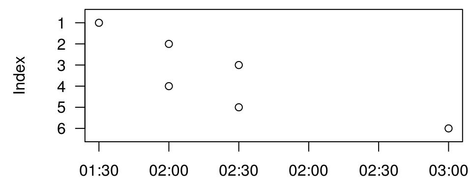
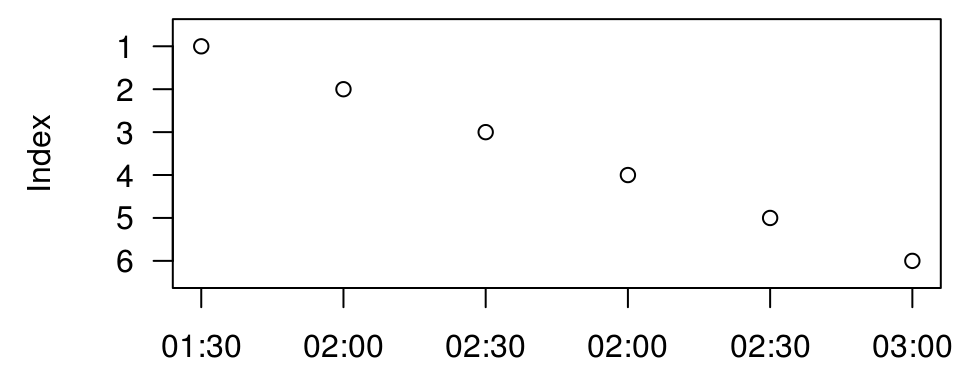

vignettes/text_to_posixct.Rmd
text_to_posixct.RmdIn R, time information are stored in objects of class POSIXct. The function as.POSIXct() is used to convert character strings representing points in time into the corresponding POSIXct objects. This tutorial demonstrates some important details about this function.
Problems may arise with times recorded in time zones that change for Daylight Saving. This is the case for the time zone “Europe/Berlin” that are used in the following examples. In this time zone, the time is given in Central European Time (CET) in winter and in Central European Summer Time (CEST) in summer.
Use the function date_range_CEST() to find out at what days summer time starts and ends, respectively:
kwb.datetime::date_range_CEST(2017:2019)
#> begin end
#> 2017 "2017-03-26" "2017-10-29"
#> 2018 "2018-03-25" "2018-10-28"
#> 2019 "2019-03-31" "2019-10-27"Note that this function returns character strings and not, for example, Date objects.
Imagine a measuring device taking measurements every 30 minutes at some location in Berlin, Germany. The clock of the device is configured to switch between standard time and daylight saving time (summer time) and vice versa. In 2017, on October 29, when summer time is reverted back to standard time, the recorded timestamps around the time shift are:
# Define timestamps (character)
timestamps <- c(
"2017-10-29 01:30:00", # 1: CEST
"2017-10-29 02:00:00", # 2: CEST
"2017-10-29 02:30:00", # 3: CEST
"2017-10-29 02:00:00", # 4: CET
"2017-10-29 02:30:00", # 5: CET
"2017-10-29 03:00:00" # 6: CET
)The timestamps “02:00” and “02:30” appear twice, at indices 2 and 3, respectively, first and at indices 4 and 5, respectively, second. This is because at 03:00 (CEST) the clock is set back to 02:00 (CET). The first occurrences of the two timestamps refer to summer time (CEST) whereas the second occurrences refer to standard time (CET).
What happens if we convert these timestamps to time objects? Using as.POSIXct() and the (correct) time zone “Europe/Berlin”, we get the following vector of time objects:
# Convert timestamps to POSIXct and print them
(times <- as.POSIXct(timestamps, tz = "Europe/Berlin"))
#> [1] "2017-10-29 01:30:00 CEST" "2017-10-29 02:00:00 CEST"
#> [3] "2017-10-29 02:30:00 CEST" "2017-10-29 02:00:00 CEST"
#> [5] "2017-10-29 02:30:00 CEST" "2017-10-29 03:00:00 CET"The function cannot distinguish between the first and second occurrences of the times 02:00 and 02:30. The output and the following plot reveal that the timestamps between 02:00 and 03:00 (exclusive) are always interpreted as being in summer time (CEST).

How can we tell R that the first occurrences of 02:00 and 02:30 refer to CEST and the second ocurrences refer to CET? We could try the following:
as.POSIXct(tz = "Europe/Berlin", c(
"2017-10-29 01:30:00 CEST",
"2017-10-29 02:00:00 CEST",
"2017-10-29 02:30:00 CEST",
"2017-10-29 02:00:00 CET",
"2017-10-29 02:30:00 CET",
"2017-10-29 03:00:00 CET"
))
#> [1] "2017-10-29 01:30:00 CEST" "2017-10-29 02:00:00 CEST"
#> [3] "2017-10-29 02:30:00 CEST" "2017-10-29 02:00:00 CEST"
#> [5] "2017-10-29 02:30:00 CEST" "2017-10-29 03:00:00 CET"Unfortunately, this does not work! Again, everything between 02:00 and 03:00 (exclusive) is assumed to refer to CEST, as the output above indicates. However, R accepts a format in which the number of hours ahead of Coordinated Universal Time (UTC) is indicated in the timestamps. In our example this looks as follows:
iso_timestamps <- c(
"2017-10-29 01:30:00+0200",
"2017-10-29 02:00:00+0200",
"2017-10-29 02:30:00+0200",
"2017-10-29 02:00:00+0100",
"2017-10-29 02:30:00+0100",
"2017-10-29 03:00:00+0100"
)Timestamps in CEST are two hours (and zero minutes) ahead of UTC. This is indicated in the timestamp by the ending +0200. Timestamps in CET are only one hour ahead of UTC and thus indicated by +0100. Timestamps given in this format can be converted to POSIXct objects by setting the format argument of the as.POSIXct() function to "%F %T%z":
as.POSIXct(iso_timestamps, tz = "Europe/Berlin", format = "%F %T%z")
#> [1] "2017-10-29 01:30:00 CEST" "2017-10-29 02:00:00 CEST"
#> [3] "2017-10-29 02:30:00 CEST" "2017-10-29 02:00:00 CET"
#> [5] "2017-10-29 02:30:00 CET" "2017-10-29 03:00:00 CET"For the meaning of the placeholders %F, %T and %z, respectively, in the format string, see ?strftime.
The package kwb.datetime provides a function iso_to_localtime() that does the same:
kwb.datetime::iso_to_localtime(iso_timestamps)
#> Converting 6 timestamps ... ok.
#> [1] "2017-10-29 01:30:00 CEST" "2017-10-29 02:00:00 CEST"
#> [3] "2017-10-29 02:30:00 CEST" "2017-10-29 02:00:00 CET"
#> [5] "2017-10-29 02:30:00 CET" "2017-10-29 03:00:00 CET"In both cases, the timestamps are interpreted correctly, as also shown in this plot:

Unfortunately, the timestamps logged by measuring devices often do not contain the additional information on the UTC offset. For this case the package kwb.datetime provides three functions that can be applied in a chain to perform a three step process:
Step 1: Use the function utc_offset_Berlin_time() to determine the UTC offsets (for timestamps given in time zone “Europe/Berlin”):
# Guess and print the UTC offsets for the given timestamps
(offsets <- kwb.datetime::utc_offset_Berlin_time(timestamps))
#> [1] 2 2 2 1 1 1This function requires the timestamps to be sorted in increasing order. Otherwise it cannot decide between CEST and CET for possibly unambiguous timestamps between 02:00 and 03:00 at the day of reverting time from CEST back to CET.
Step 2: Use these offsets and the function append_utc_offset_string() to create timestamps in ISO 8601 format, i.e. ending in either +0200 (when referring to CEST) or in +0100 (when referring to CET):
# Create ISO 8601 timestamps and print them
(iso_timestamps <- kwb.datetime::append_utc_offset_string(timestamps, offsets))
#> [1] "2017-10-29 01:30:00+0200" "2017-10-29 02:00:00+0200"
#> [3] "2017-10-29 02:30:00+0200" "2017-10-29 02:00:00+0100"
#> [5] "2017-10-29 02:30:00+0100" "2017-10-29 03:00:00+0100"Step 3: Use the function iso_to_localtime() to convert these new timestamps from character into their corresponding POSIXct objects:
# Create POSIXct-objects in time zone "Europe/Berlin" and print them
(kwb.datetime:::iso_to_localtime(iso_timestamps))
#> Converting 6 timestamps ... ok.
#> [1] "2017-10-29 01:30:00 CEST" "2017-10-29 02:00:00 CEST"
#> [3] "2017-10-29 02:30:00 CEST" "2017-10-29 02:00:00 CET"
#> [5] "2017-10-29 02:30:00 CET" "2017-10-29 03:00:00 CET"The three steps presented above are performed in the function berlin_local_timestamps_to_POSIXct() so that you can do the conversion of the original timestamps by calling:
See vignette “Exkurs Zeitzonen” (in German).